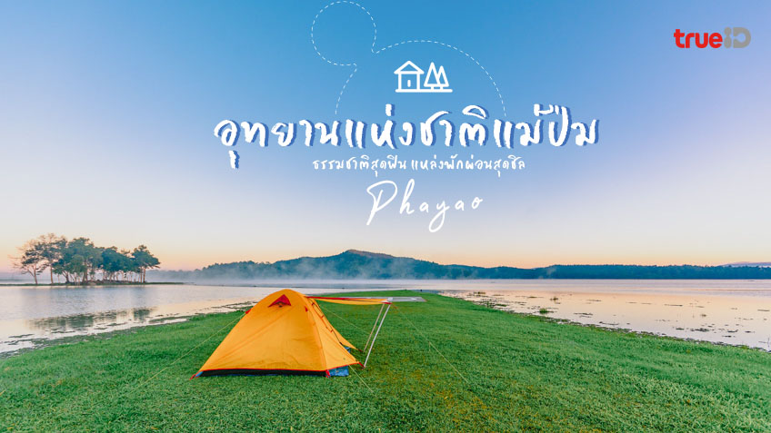

เที่ยวแม่ปืม - ธรรมชาติอันเงียบสงบ

ดื่มด่ำกับธรรมชาติอันบริสุทธิ์
แม่ปืมเป็นสถานที่ท่องเที่ยวที่เหมาะสำหรับการพักผ่อน ชื่นชมวิวธรรมชาติ และสัมผัสวิถีชีวิตเรียบง่าย
สถานที่น่าสนใจ
อ่างเก็บน้ำแม่ปืม
เส้นทางเดินป่าธรรมชาติ
จุดชมวิวพระอาทิตย์ตก
หมู่บ้านชาวเขาใกล้เคียง